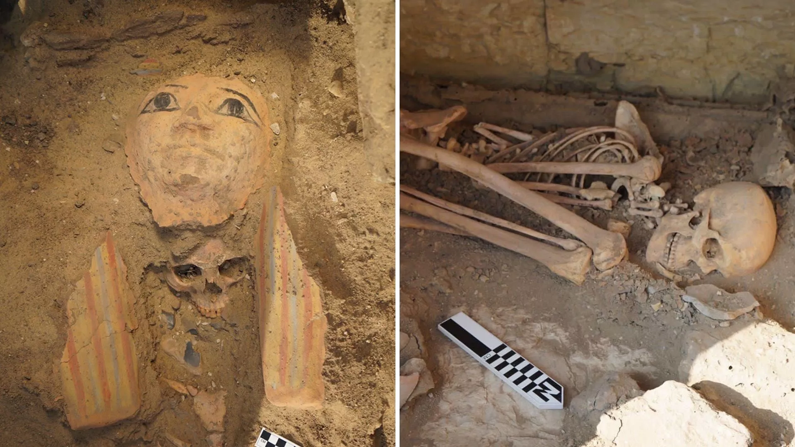
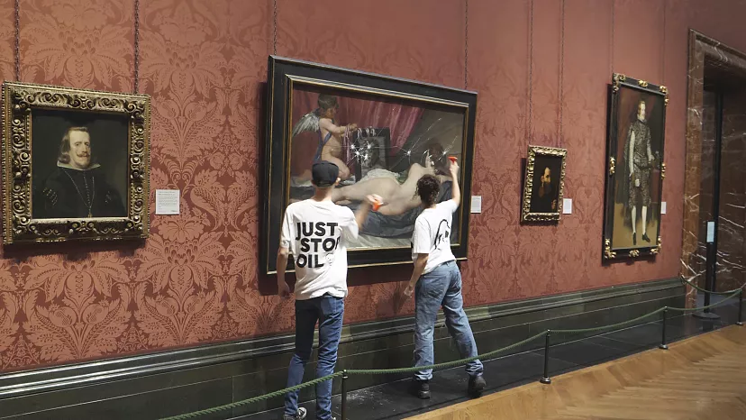

Japonya'nın en prestijli edebiyat ödülünü kazanan romancı ChatGPT
kullandığını açıkladı

2023'te Wikipedia'da en çok aranan konular hangileriydi?
Prenses Diana'nın elbisesi açık artırmada 1,1 milyon dolarla rekor
fiyata satıldı

Mısır'ın Sakkara nekropolünde 4 bin 500 yıllık kaya mezar bulundu

Just Stop Oil iklim eylemcileri Londra'daki Ulusal Galeri'de
Velazquez tablosuna saldırdı
Avrupa Uzay Ajansı'nın yörünge aracı, Mars ekvatorunda buzlu su
yatakları keşfetmiş olabilir